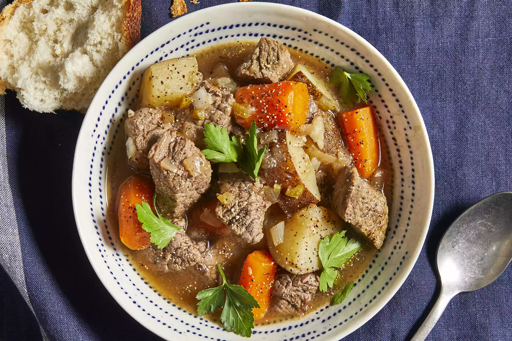

Slow Cooker Beef Stew

Description
This easy slow cooker beef stew recipe made with potatoes, carrots, celery, broth, herbs, and spices is hearty
and comforting. You won't be slow to say 'yum'! This slow cooker beef stew is the perfect low maintenance meal
for chilly fall and winter nights. Full of cozy flavor and hearty ingredients, this beef stew recipe will warm
you up from the inside out.
Ingredients
- Stew meat
- Flour
- Seasonings
- Broth
- Vegtables
Steps
- Combine ingredients: Place the beef in the slow cooker, then toss with flour, salt, and pepper. Add the
broth, vegetables, Worcestershire sauce, paprika, garlic, and bay leaf. Stir to combine.
- 2. Set slow cooker: Cover the Crock-Pot and cook on Low for 8 to 12 hours or on High for 4 to 6 hours.